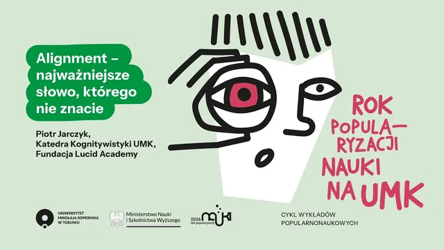
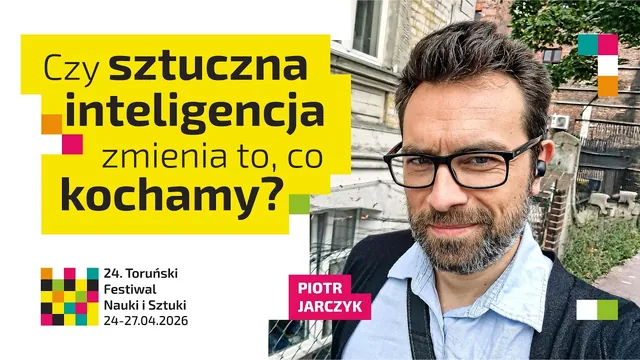
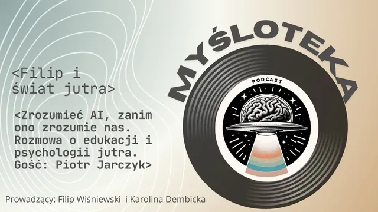
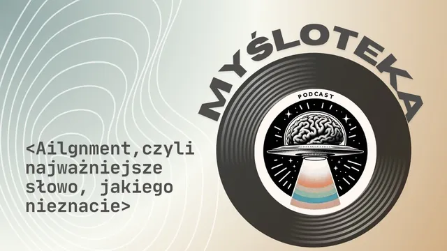
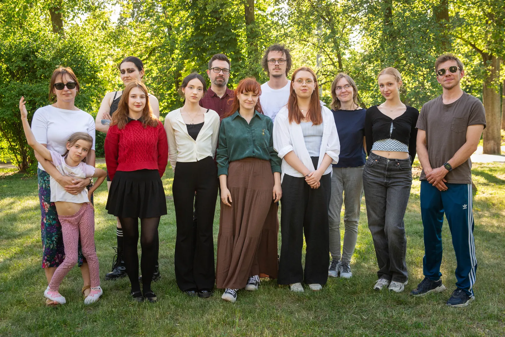

wykład
00 · lucid academy
Program dostosowujemy do grupy: do osób, które rozpoczynają pracę z AI, i do zespołów, które korzystają z niej na co dzień. Uczymy obsługi narzędzi oraz rozumienia, jak działają i gdzie kończą się ich możliwości.
01 · misja
Lucid Academy prowadzi edukację o sztucznej inteligencji oraz realizuje projekty kulturalne i obywatelskie. Uczymy korzystania z narzędzi AI w sposób odpowiedzialny: z weryfikacją wyników, ze świadomością ograniczeń i z myślą o własnych zastosowaniach.
filar 1
Szkolenia i wykłady dla szkół, urzędów, organizacji pozarządowych i mieszkańców, oparte na rzetelnej wiedzy o możliwościach i ograniczeniach narzędzi.
filar 2
Narzędzia cyfrowe dla wydarzeń i inicjatyw lokalnych: przewodniki po świętach dzielnic, gry miejskie i mapy. Technologia służy w nich celom społecznym i kulturalnym.

02 · uniwersytet i szkolenia
Najściślej współpracujemy z kognitywistyką. Zajęcia trafiają również do studentów psychologii i na listę przedmiotów ogólnouniwersyteckich. Współpracowaliśmy także z Otwartym Uniwersytetem w ramach europejskiej sieci YUFE.
Trzy wątki zajęć
Najaktywniejszych uczestników wspieramy w dalszym rozwoju: mikrograntami Lucid Flow, mentoringiem w programie Lucid Academy Sensei oraz spotkaniami społeczności LA Journeys.


wykład

wykład

podcast

podcast
„Dodać więcej godzin na ćwiczenia.”
„Dodać kolejne spotkania/edycje ;)”
„A jeśli będziecie myśleli o kontynuacji, to chętnie dołączę :D”
03 · oferta
Prowadzimy działania edukacyjne i doradcze dla instytucji publicznych, samorządów, szkół, organizacji pozarządowych i społeczności lokalnych.

01 · obszar wiodący
Szkolimy seniorów, młodzież, edukatorów, kadry instytucji publicznych, liderów lokalnych i mieszkańców. Format, czas trwania i poziom zaawansowania dostosowujemy do potrzeb grupy: od pojedynczego wykładu do cyklu warsztatów.
Obok ćwiczeń praktycznych omawiamy zasady działania narzędzi, ponieważ ta wiedza pozostaje aktualna dłużej niż kolejne wersje aplikacji.
02
Vibe coding to tworzenie narzędzi cyfrowych w dialogu z AI: uczestnik opisuje potrzebne funkcje, a model przygotowuje działający prototyp. Na warsztatach powstają rozwiązania odpowiadające na konkretne potrzeby dzielnic, szkół i miast.
03
Prowadzimy konsultacje społeczne, budżety obywatelskie, panele obywatelskie i debaty. Narzędzia AI stosujemy tam, gdzie podnoszą jakość procesu: w analizie wniosków, wizualizacji danych i zwiększaniu dostępności materiałów.
04 · gdzie już byliśmy
05 · co budujemy
Tworzymy narzędzia cyfrowe we współpracy z instytucjami i uczymy zespoły, jak rozwijać je samodzielnie.
06 · zespół
Zespół tworzą osoby związane ze środowiskiem akademickim, sektorem technologicznym i organizacjami społecznymi.
założyciel i prezes
Z wykształcenia prawnik, ma za sobą pięć lat studiów psychologicznych. Od ponad trzech lat prowadzi szkolenia i wykłady o sztucznej inteligencji dla zróżnicowanych grup: seniorów, mieszkańców mniejszych miejscowości, edukatorów, kadr instytucji publicznych, studentów i liderów lokalnych.
Na Uniwersytecie Mikołaja Kopernika prowadzi autorskie zajęcia o AI w Katedrze Kognitywistyki. Lucid Academy założył w 2025 roku, aby wartościowe projekty edukacyjne i społeczne miały stałe zaplecze organizacyjne i mogły przynosić trwałe efekty.
piotr.jarczyk.ai@gmail.com
07 · kontakt
Zapraszamy do kontaktu w sprawie szkoleń, wspólnych projektów oraz partnerstw przy wydarzeniach edukacyjnych i kulturalnych.
dane kontaktowe
Lucid Academy
Piotr Jarczyk — założyciel i prezes
piotr.jarczyk.ai@gmail.com+48 693 10 70 10
dane formalne
Siedziba: ul. Hieronima Derdowskiego 3/9, 87-100 Toruń
Wycenę przygotowujemy indywidualnie, w zależności od formatu, grupy odbiorców i zakresu działań.